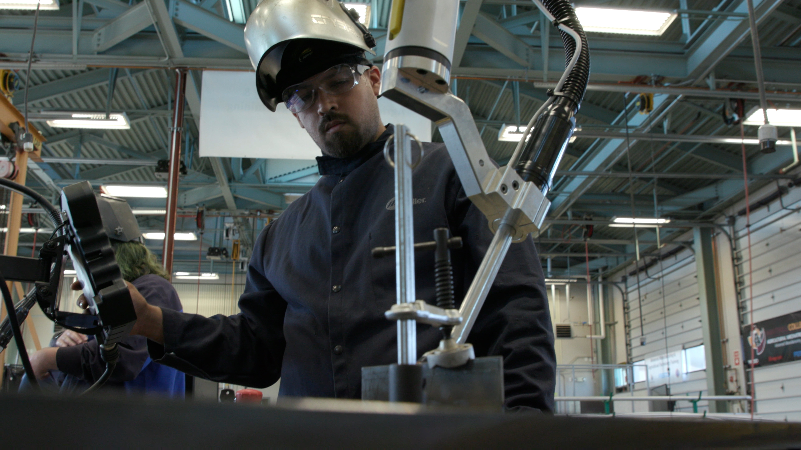

Located in the heart of the "Salad Bowl of America," Hartnell College in Salinas, California serves a community where approximately 70-80% of the nation's vegetables are grown within a 100-mile radius.
The college provides crucial technical education in welding, mechatronics, and manufacturing to support both the agricultural industry and local fabrication shops. With deep community ties, Hartnell College stands at the intersection of traditional trades and emerging technologies.
Industry technology was outpacing educational training, creating a critical skills gap for graduates entering the workforce.
Local manufacturers were adopting automation to address labor challenges, but educational programs weren't equipped to teach these technologies.
Students needed exposure to technologies that would prepare them not just for today's jobs, but for those emerging in the next five years.
"The most troubling thing right now is that the technology used in industry is outpacing our own training. So, we're trying at Hartnell College to stay ahead of this and train students not only for the careers of today, but five years from now."
Three years ago, Hartnell College began redesigning their manufacturing and agricultural engineering curriculum. They needed welding automation tools that would:

Hartnell College chose to implement the Miller Copilot welding robot system in their training program. The timing was perfect—as Miller designed their collaborative welding system, Hartnell saw it as an ideal tool for preparing students for careers in small and medium-sized manufacturing operations.
Intuitive controls that students could quickly learn to operate without extensive programming knowledge
Matched the technology being adopted by local manufacturing businesses
Functions alongside human welders rather than replacing them
Students applied their automation skills to transform an electric Amiga tractor platform for agricultural robotics. This national competition project required students to redesign the tractor for navigating artichoke fields—showcasing how welding and automation skills directly transfer to agricultural applications.
Modified the frame to stand seven feet tall, preventing crop damage while navigating standard growing beds
Mounted cameras and sensors for plant imaging, with algorithms to predict harvest timing and detect plant issues
Students applied CAD design, mathematical calculations, fabrication techniques, and programming skills
The Miller Copilot standardizes welding variables like travel speed and work angles, allowing students to focus on analyzing weld quality without the variability of manual execution. This accelerates learning and builds deeper technical knowledge.
Students learn to evaluate when automation makes economic sense by experiencing the productivity advantages for repetitive tasks. This builds skills in calculating ROI for technology investments—combining technical and business knowledge.
By aligning with local industry technology adoption, Hartnell created targeted internship opportunities with manufacturers using the same equipment. Students gain experience that makes them immediately valuable without extensive onboarding.
The Salinas Valley manufacturing landscape consists predominantly of multi-generational family businesses that have evolved over 50+ years. Hartnell's technology training aligns with these businesses' growth trajectory.
Companies adopting automation technologies like the Miller Copilot often expand their workforce because:
Maintain core manual skills while introducing automation technologies. This dual approach ensures graduates can work effectively in both traditional and highly automated environments.
Prioritize technologies with intuitive interfaces that don't require extensive programming knowledge. This makes technology access more democratic across student skill levels.
Research which automation systems are being adopted by regional employers. This direct alignment creates immediate employment pathways for graduates.
Foster an attitude that views new technologies as opportunities rather than threats, preparing students for careers of continuous technological evolution.
By embracing collaborative robotics and automation tools like the Miller Copilot welding system, educational institutions prepare students for manufacturing's future—where human skills and technological capabilities combine to create more productive, higher-quality outcomes.